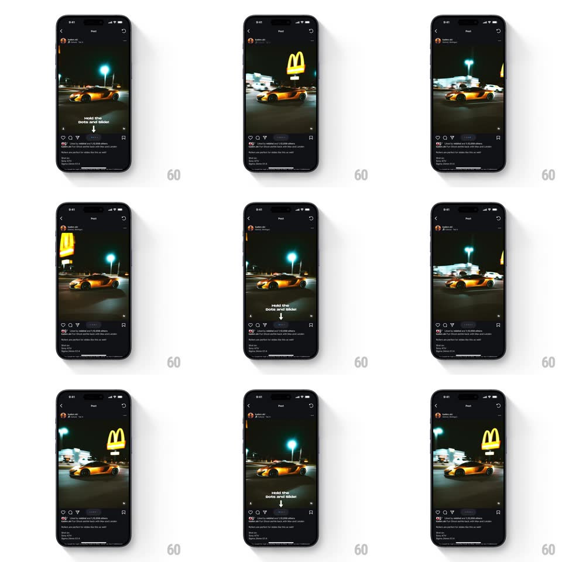

Media
Frame-by-frame

Rebuild this interaction 1:1: Instagram's Instants viewer - hold and slide across the pagination dots to scrub through the photo carousel, with floating heart reactions and a no-screenshot guard screen.

Rebuild this interaction 1:1: Instagram's Instants viewer - hold and slide across the pagination dots to scrub through the photo carousel, with floating heart reactions and a no-screenshot guard screen.
## Integration
Integration: stack-agnostic spec - springs given as stiffness/damping, timed motions as duration + curve; map every value to your framework and animation library of choice.
## Scene
A dark full-screen viewer ("Introducing Instants" intro first): one rounded-corner photo at a time, pagination dots beneath, a "Tap to go to the next photo" hint, and a reaction row (emoji: heart-eyes, heart, fire) with "Only you and the author can see your reactions." Trying to screenshot lands on a "You can't screenshot or record this" screen.
## Motion spec
Pattern: hold-and-scrub gallery.
- Hold on the pagination dots: the dot row expands into a scrub strip (dots spread 8px to 14px spacing, 150ms) and sliding the finger scrubs photos 1:1 - photos crossfade with a slight scale (0.96 to 1) as the strip position maps across the whole carousel.
- While scrubbing, the current photo tilts a degree toward the drag direction (+-2deg) and its rounded corners tighten (24px to 16px), relaxing on release.
- Release: settles on the nearest photo with a spring (~380/24); the active dot fills and stretches (width 6px to 18px, 200ms).
- Tap (not hold) on the photo: advances with a quick slide-fade (250ms).
- Tap a reaction emoji: it pops (scale 0.5 to 1.3 to 1, spring ~400/16) and a stream of that emoji floats up from the button (5-8 particles, drifting paths, 1.2s, fading out); hearts accumulate on the photo's corner briefly.
- The guard screen: on screenshot attempt, the photo blurs out (200ms) and the guard message card scales in (spring ~380/22).
## Calibration
- Scrub mapping is absolute: strip's left edge is photo 1, right edge is the last - no acceleration.
- Emoji particles never obscure the next/previous affordances.
## Reduced motion
Photos crossfade; reactions appear without particles.
## Don't miss
- The viewer is black with one rounded photo - no chrome beyond dots, hint, and reactions.
- The hint text swaps between "Tap to go to the next photo" and the reaction privacy note - they never show together.